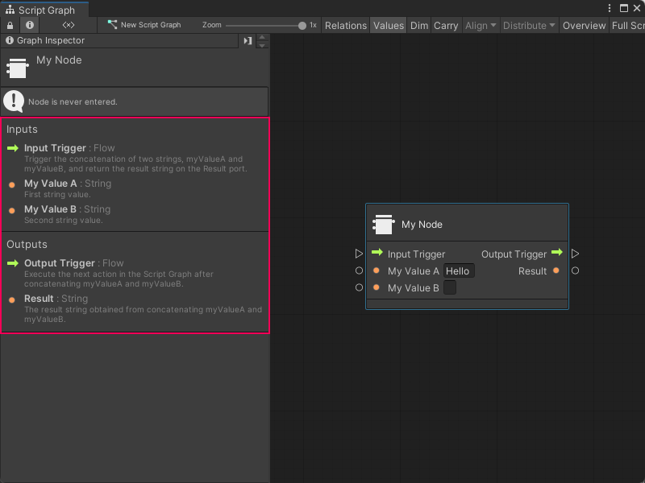

Add documentation to a Custom C# node¶
You can also add Graph Inspector documentation to a Custom C# node. Visual Scripting displays the documentation in the Graph Inspector when you select a node in a Script Graph. The documentation isn’t required to use the node, but can help your users understand the purpose and usage of a node.
To add documentation to a node:
[!includeopen-project-window]
[!NOTE] If you already have an Editor folder in your project, you can skip Steps 2-3.
Right-click your Assets folder or select Add (+), then select Folder.
Name the folder Editor.
Do one of the following:
Right-click your Editor folder in the Project window’s folder list.
Right-click anywhere in the Project window’s preview pane with your Editor folder selected.
[!includecreate-c-script]
Enter a name, such as
MyNodeDescriptorfor the new script file.Press Enter.
[!includeopen-new-external-code]
In your external editor, copy and paste the following code into the C# script:
using System; using Unity.VisualScripting; using UnityEngine; [Descriptor(typeof(MyNode))] public class MyNodeDescriptor : UnitDescriptor<MyNode> { public MyNodeDescriptor(MyNode unit) : base(unit) {} protected override void DefinedPort(IUnitPort port, UnitPortDescription description) { base.DefinedPort(port, description); switch (port.key) { case "inputTrigger": description.summary = "Trigger the concatenation of two strings, myValueA and myValueB, and return the result string on the Result port."; break; case "myValueA": description.summary = "First string value."; break; case "myValueB": description.summary = "Second string value."; break; case "outputTrigger": description.summary = "Execute the next action in the Script Graph after concatenating myValueA and myValueB."; break; case "result": description.summary = "The result string obtained from concatenating myValueA and myValueB."; break; } } }
You can modify the script to suit the specifics of your own node.
[!includesave-script]
[!includereturn-unity]
Do one of the following:
[!includeopen-graph-w-node].
[!includeff-add-node]
Select the node and open the Graph Inspector to view your documentation.

Next steps¶
After you add documentation to a node, you can choose to further customize the node with node class and port attributes.